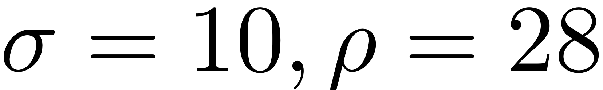
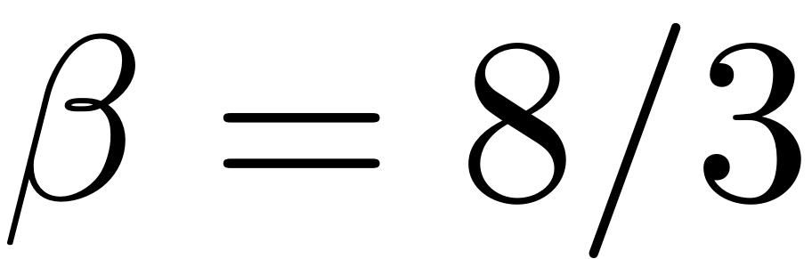
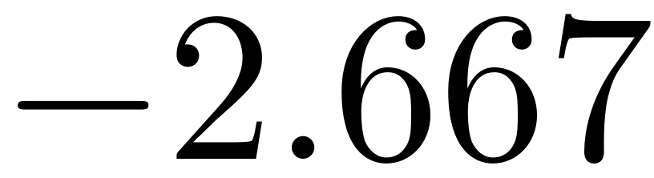
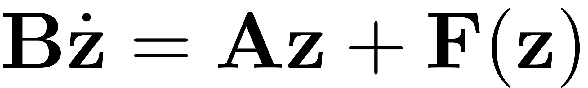
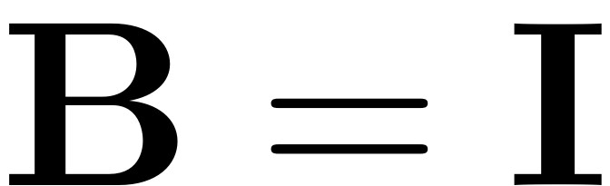
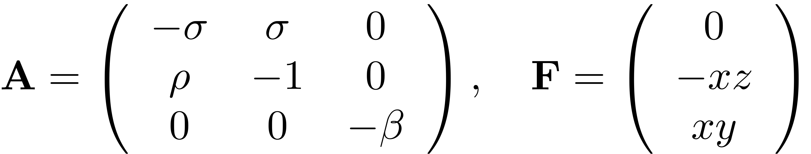
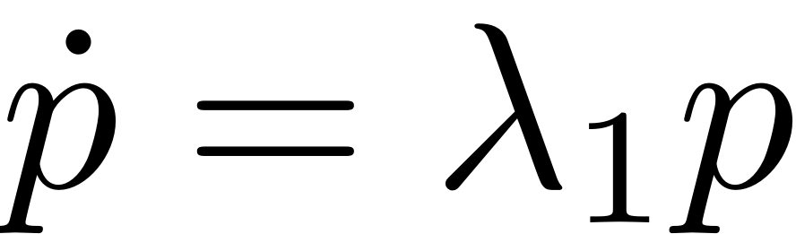
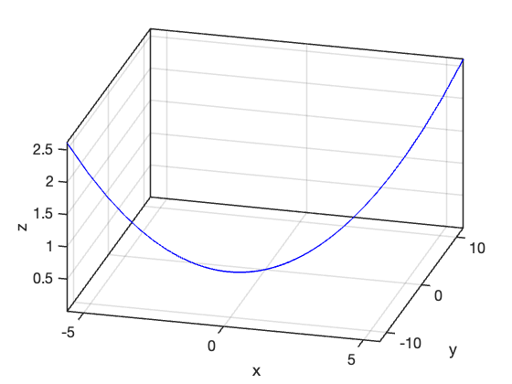
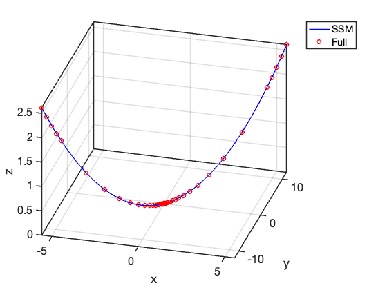

<!DOCTYPE html
  PUBLIC "-//W3C//DTD HTML 4.01 Transitional//EN">

<html><html><body><div class="banner"><a href="../../../index.html"></a></div></body></html><head>
<meta content="text/html; charset=utf-8" http-equiv="Content-Type"/>
<!--
This HTML was auto-generated from MATLAB code.
To make changes, update the MATLAB code and republish this document.
      --><title>Lorentz-System</title><meta content="MATLAB 9.14" name="generator"/><link href="http://purl.org/dc/elements/1.1/" rel="schema.DC"/><meta content="2023-08-31" name="DC.date"/><meta content="Lorentz_System.m" name="DC.source"/><style type="text/css">
html,body,div,span,applet,object,iframe,h1,h2,h3,h4,h5,h6,p,blockquote,pre,a,abbr,acronym,address,big,cite,code,del,dfn,em,font,img,ins,kbd,q,s,samp,small,strike,strong,tt,var,b,u,i,center,dl,dt,dd,ol,ul,li,fieldset,form,label,legend,table,caption,tbody,tfoot,thead,tr,th,td{margin:0;padding:0;border:0;outline:0;font-size:100%;vertical-align:baseline;background:transparent}body{line-height:1}ol,ul{list-style:none}blockquote,q{quotes:none}blockquote:before,blockquote:after,q:before,q:after{content:'';content:none}:focus{outine:0}ins{text-decoration:none}del{text-decoration:line-through}table{border-collapse:collapse;border-spacing:0}

html { min-height:100%; margin-bottom:1px; }
html body { height:100%; margin:0px; font-family:Arial, Helvetica, sans-serif; font-size:10px; color:#000; line-height:140%; background:#fff none; overflow-y:scroll; }
html body td { vertical-align:top; text-align:left; }

h1 { padding:0px; margin:0px 0px 25px; font-family:Arial, Helvetica, sans-serif; font-size:1.5em; color:#d55000; line-height:100%; font-weight:normal; }
h2 { padding:0px; margin:0px 0px 8px; font-family:Arial, Helvetica, sans-serif; font-size:1.2em; color:#000; font-weight:bold; line-height:140%; border-bottom:1px solid #d6d4d4; display:block; }
h3 { padding:0px; margin:0px 0px 5px; font-family:Arial, Helvetica, sans-serif; font-size:1.1em; color:#000; font-weight:bold; line-height:140%; }

a { color:#005fce; text-decoration:none; }
a:hover { color:#005fce; text-decoration:underline; }
a:visited { color:#004aa0; text-decoration:none; }

p { padding:0px; margin:0px 0px 20px; }
img { padding:0px; margin:0px 0px 20px; border:none; }
p img, pre img, tt img, li img, h1 img, h2 img { margin-bottom:0px; }

ul { padding:0px; margin:0px 0px 20px 23px; list-style:square; }
ul li { padding:0px; margin:0px 0px 7px 0px; }
ul li ul { padding:5px 0px 0px; margin:0px 0px 7px 23px; }
ul li ol li { list-style:decimal; }
ol { padding:0px; margin:0px 0px 20px 0px; list-style:decimal; }
ol li { padding:0px; margin:0px 0px 7px 23px; list-style-type:decimal; }
ol li ol { padding:5px 0px 0px; margin:0px 0px 7px 0px; }
ol li ol li { list-style-type:lower-alpha; }
ol li ul { padding-top:7px; }
ol li ul li { list-style:square; }

.content { font-size:1.2em; line-height:140%; padding: 20px; }

pre, code { font-size:12px; }
tt { font-size: 1.2em; }
pre { margin:0px 0px 20px; }
pre.codeinput { padding:10px; border:1px solid #d3d3d3; background:#f7f7f7; }
pre.codeoutput { padding:10px 11px; margin:0px 0px 20px; color:#4c4c4c; }
pre.error { color:red; }

@media print { pre.codeinput, pre.codeoutput { word-wrap:break-word; width:100%; } }

span.keyword { color:#0000FF }
span.comment { color:#228B22 }
span.string { color:#A020F0 }
span.untermstring { color:#B20000 }
span.syscmd { color:#B28C00 }
span.typesection { color:#A0522D }

.footer { width:auto; padding:10px 0px; margin:25px 0px 0px; border-top:1px dotted #878787; font-size:0.8em; line-height:140%; font-style:italic; color:#878787; text-align:left; float:none; }
.footer p { margin:0px; }
.footer a { color:#878787; }
.footer a:hover { color:#878787; text-decoration:underline; }
.footer a:visited { color:#878787; }

table th { padding:7px 5px; text-align:left; vertical-align:middle; border: 1px solid #d6d4d4; font-weight:bold; }
table td { padding:7px 5px; text-align:left; vertical-align:top; border:1px solid #d6d4d4; }


  </style></head><body><div class="content"><h1>Lorentz-System</h1><!--introduction--><!--/introduction--><h2>Contents</h2><div><ul><li><a href="#2">Build model</a></li><li><a href="#5">SSM Computation</a></li><li><a href="#7">Visualization of the unstable SSM</a></li></ul></div><p>Consider the Lorentz system</p><p></p><p>We fix the parameters as the standard choice  and . The origin is a saddle point with real eigenvalues that is approximately ,  and 11.828 [1]. So there is a one-dimensional unstable manifold of the origin. Next, we apply SSMTool to compute the unstable SSM and the associated reduced dynamics on the SSM.</p><p>[1] Krauskopf, Bernd, et al. "A survey of methods for computing (un) stable manifolds of vector fields." <i>International Journal of Bifurcation and Chaos</i> 15.03 (2005): 763-791.</p><pre class="codeinput">clear <span class="string">all</span>;
</pre><h2 id="2">Build model</h2><p>In SSMTool, the setup of first-order autonomous systems is given as follows</p><p></p><p>For the Lorenz system, we have ,</p><p></p><pre class="codeinput">sigma = 10;
rho   = 28;
beta  = 8/3;
[A,B,F] = build_model(sigma,rho,beta);
</pre><p>Dynamical system setup</p><pre class="codeinput">DS = <a href="../../../Library/DynamicalSystem/DynamicalSystem.html">DynamicalSystem</a>();
set(DS,<span class="string">'A'</span>,A,<span class="string">'B'</span>,B,<span class="string">'fnl'</span>,F);
</pre><p>Linear Modal analysis and SSM computation</p><pre class="codeinput">[V,D,W] = DS.<a href="../../../Library/DynamicalSystem/linear_spectral_analysis.html">linear_spectral_analysis</a>();
</pre><pre class="codeoutput">
 The first 3 nonzero eigenvalues are given as 
   11.8277
   -2.6667
  -22.8277

</pre><h2 id="5">SSM Computation</h2><pre class="codeinput">S = SSM(DS);
set(S.<a href="../../../Library/Features/Options/Options.html">Options</a>,<span class="string">'paramStyle'</span>,<span class="string">'graph'</span>,<span class="string">'reltol'</span>,0.5)
masterModes = 1;                        <span class="comment">% master mode</span>
order = 5;                              <span class="comment">% SSM expansion order</span>
S.<a href="../../../Library/Manifold/choose_E.html">choose_E</a>(masterModes);
[W0,R0] = S.<a href="../../../Library/Manifold/compute_whisker.html">compute_whisker</a>(order);     <span class="comment">% compute of SSM</span>
</pre><pre class="codeoutput">sigma_out = -1
sigma_in = -1
Computing autonomous whisker at order 2
0 (near) inner resonance(s) detected at order 2
Manifold computation time at order 2 = 00:00:00
Estimated memory usage at order  2 = 4.14E-03 MB
Computing autonomous whisker at order 3
0 (near) inner resonance(s) detected at order 3
Manifold computation time at order 3 = 00:00:00
Estimated memory usage at order  3 = 6.69E-03 MB
Computing autonomous whisker at order 4
0 (near) inner resonance(s) detected at order 4
Manifold computation time at order 4 = 00:00:00
Estimated memory usage at order  4 = 8.01E-03 MB
Computing autonomous whisker at order 5
0 (near) inner resonance(s) detected at order 5
Manifold computation time at order 5 = 00:00:00
Estimated memory usage at order  5 = 9.42E-03 MB
</pre><p>Given no inner resonances are detected, the reduced dynamics is linear: .</p><h2 id="7">Visualization of the unstable SSM</h2><pre class="codeinput"><span class="comment">% dynamics on SSM</span>
lamdMaster = D(masterModes,masterModes);
t  = linspace(0,1,100);
p1 = 1e-4*exp(lamdMaster*t);
<span class="comment">% mapping to full system</span>
z1 = <a href="../../../Library/Features/misc/reduced_to_full_traj.html">reduced_to_full_traj</a>(t,p1,W0);
<span class="comment">% repeat the above for different initial condition</span>
p2 = -1e-4*exp(lamdMaster*t);
z2 = <a href="../../../Library/Features/misc/reduced_to_full_traj.html">reduced_to_full_traj</a>(t,p2,W0);
z  = [z2(:,end:-1:1) z1];
<span class="comment">% plot SSM</span>
figure;
plot3(z(1,:),z(2,:),z(3,:),<span class="string">'b-'</span>,<span class="string">'LineWidth'</span>,1.5); grid <span class="string">on</span>
xlabel(<span class="string">'x'</span>); ylabel(<span class="string">'y'</span>); zlabel(<span class="string">'z'</span>);
set(gca,<span class="string">'fontsize'</span>,16);
set(gca,<span class="string">'LineWidth'</span>,1.5);
box <span class="string">on</span>; view([15,35])
axis <span class="string">tight</span>
</pre> <p>To validate the obtained SSM, we integrate the Lorenz system with initial conditions along the unstable subspace.</p><pre class="codeinput"><span class="comment">% forward simulation of the original system</span>
zinit_plus = V(:,1)*1e-4;
zinit_minu = -zinit_plus;
odefunc = @(t,x) lorenz(x,sigma,rho,beta);
[tplus,zplus] = ode45(odefunc,[0,1],zinit_plus);
[tminu,zminu] = ode45(odefunc,[0,1],zinit_minu);
zfull = [zminu(end:-1:1,:);zplus];
<span class="comment">% plot simulated orbits</span>
hold <span class="string">on</span>
plot3(zfull(:,1),zfull(:,2),zfull(:,3),<span class="string">'ro'</span>,<span class="string">'LineWidth'</span>,1.5);
legend(<span class="string">'SSM'</span>,<span class="string">'Full'</span>)
</pre> <p class="footer"><br/><a href="https://www.mathworks.com/products/matlab/">Published with MATLAB® R2023a</a><br/></p></div><!--
##### SOURCE BEGIN #####
%% Lorentz-System
%
%%
% Consider the Lorentz system
% 
% $$\dot{x}=\sigma(y-x),\\\dot{y}=\rho x-y-xz,\\\dot{z}=-\beta z+xy.$$
% 
% We fix the parameters as the standard choice $\sigma=10,\rho=28$ and $\beta=8/3$. 
% The origin is a saddle point with real eigenvalues that is approximately $-22.828$, 
% $-2.667$ and 11.828 [1]. So there is a one-dimensional unstable manifold of 
% the origin. Next, we apply SSMTool to compute the unstable SSM and the associated 
% reduced dynamics on the SSM.
% 
% [1] Krauskopf, Bernd, et al. "A survey of methods for computing (un) stable 
% manifolds of vector fields." _International Journal of Bifurcation and Chaos_ 
% 15.03 (2005): 763-791.

clear all;
%% Build model
% 
% In SSMTool, the setup of first-order autonomous systems is given as follows
% 
% $$\mathbf{B}\dot{\mathbf{z}}=\mathbf{A}\mathbf{z}+\mathbf{F}(\mathbf{z})$$
% 
% For the Lorenz system, we have $\mathbf{B}=\mathbf{I}$,
% 
% $$\mathbf{A}=\left(\begin{array}{ccc}-\sigma & \sigma & 0\\\rho & -1 & 0 \\0 
% & 0 & -\beta\end{array}\right),\quad \mathbf{F}= \left(\begin{array}{c}0 \\ 
% -xz\\ xy\end{array}\right)$$

sigma = 10;
rho   = 28;
beta  = 8/3;
[A,B,F] = build_model(sigma,rho,beta);
%% 
% Dynamical system setup

DS = <a href="../../../Library/DynamicalSystem/DynamicalSystem.html">DynamicalSystem</a>();
set(DS,'A',A,'B',B,'fnl',F);
%% 
% Linear Modal analysis and SSM computation

[V,D,W] = DS.<a href="../../../Library/DynamicalSystem/linear_spectral_analysis.html">linear_spectral_analysis</a>();
%% SSM Computation
S = SSM(DS);
set(S.<a href="../../../Library/Features/Options/Options.html">Options</a>,'paramStyle','graph','reltol',0.5)
masterModes = 1;                        % master mode
order = 5;                              % SSM expansion order
S.<a href="../../../Library/Manifold/choose_E.html">choose_E</a>(masterModes);
[W0,R0] = S.<a href="../../../Library/Manifold/compute_whisker.html">compute_whisker</a>(order);     % compute of SSM
%% 
% Given no inner resonances are detected, the reduced dynamics is linear: $\dot{p}=\lambda_1p$.
%% Visualization of the unstable SSM

% dynamics on SSM
lamdMaster = D(masterModes,masterModes);
t  = linspace(0,1,100);
p1 = 1e-4*exp(lamdMaster*t); 
% mapping to full system
z1 = <a href="../../../Library/Features/misc/reduced_to_full_traj.html">reduced_to_full_traj</a>(t,p1,W0);
% repeat the above for different initial condition
p2 = -1e-4*exp(lamdMaster*t);
z2 = <a href="../../../Library/Features/misc/reduced_to_full_traj.html">reduced_to_full_traj</a>(t,p2,W0);
z  = [z2(:,end:-1:1) z1];
% plot SSM
figure;
plot3(z(1,:),z(2,:),z(3,:),'b-','LineWidth',1.5); grid on
xlabel('x'); ylabel('y'); zlabel('z');
set(gca,'fontsize',16);
set(gca,'LineWidth',1.5);
box on; view([15,35])
axis tight
%% 
% To validate the obtained SSM, we integrate the Lorenz system with initial 
% conditions along the unstable subspace.

% forward simulation of the original system
zinit_plus = V(:,1)*1e-4;
zinit_minu = -zinit_plus;
odefunc = @(t,x) lorenz(x,sigma,rho,beta);
[tplus,zplus] = ode45(odefunc,[0,1],zinit_plus);
[tminu,zminu] = ode45(odefunc,[0,1],zinit_minu);
zfull = [zminu(end:-1:1,:);zplus];
% plot simulated orbits
hold on
plot3(zfull(:,1),zfull(:,2),zfull(:,3),'ro','LineWidth',1.5);
legend('SSM','Full')
##### SOURCE END #####
--></body></html>